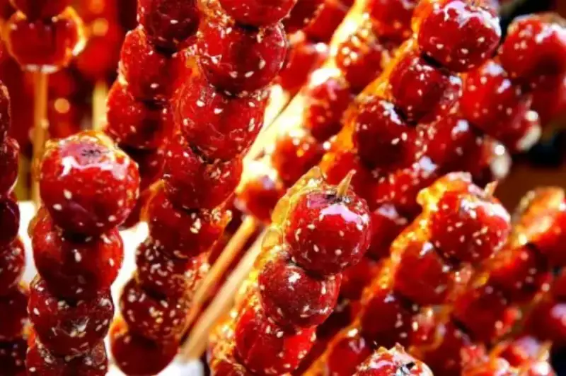
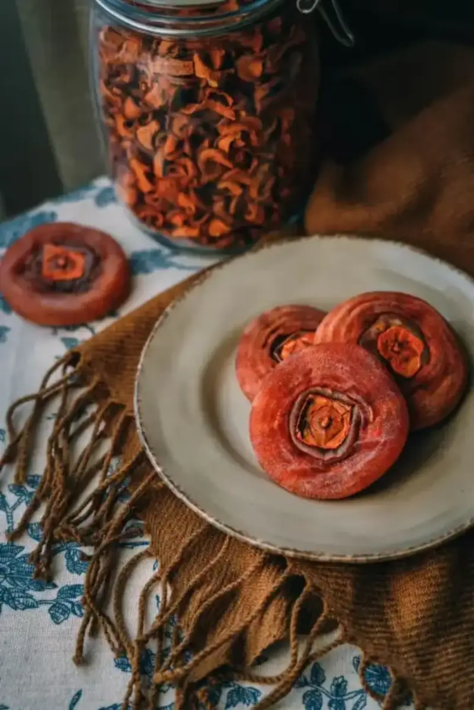
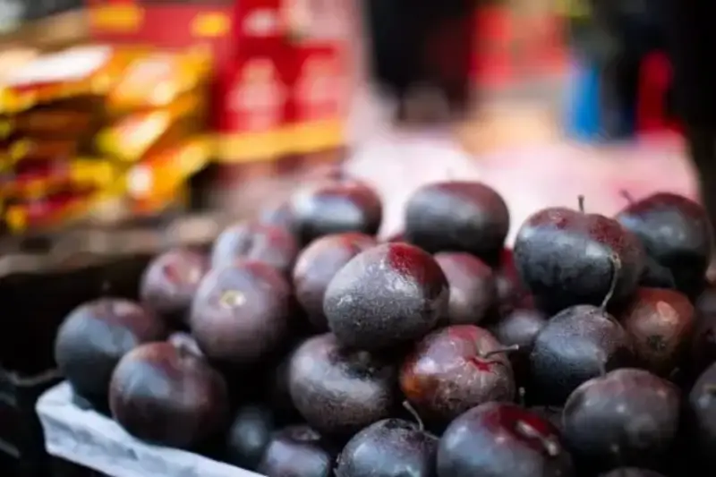
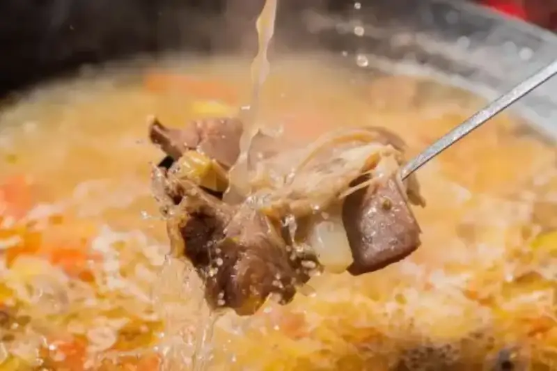
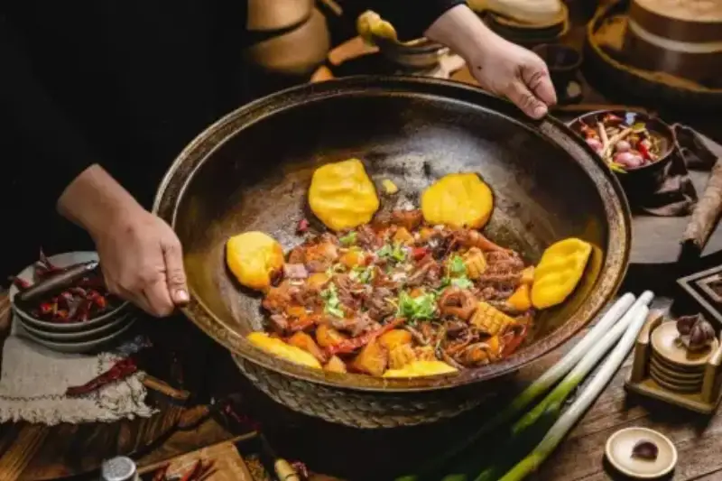
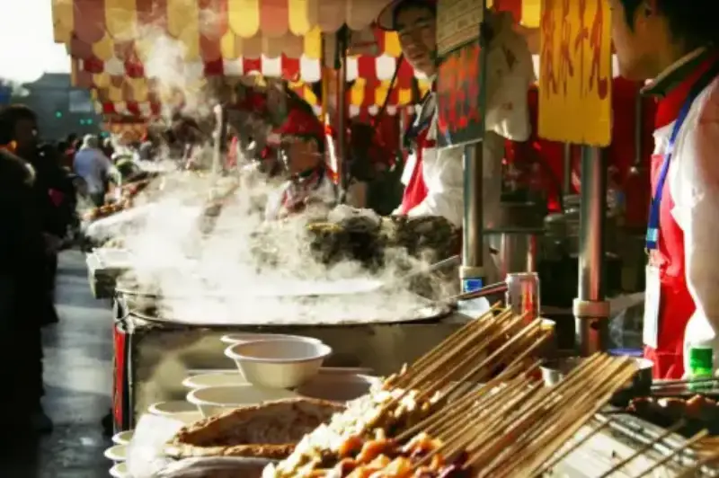
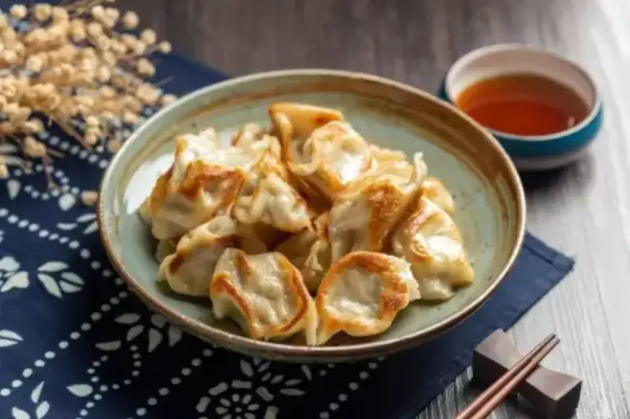
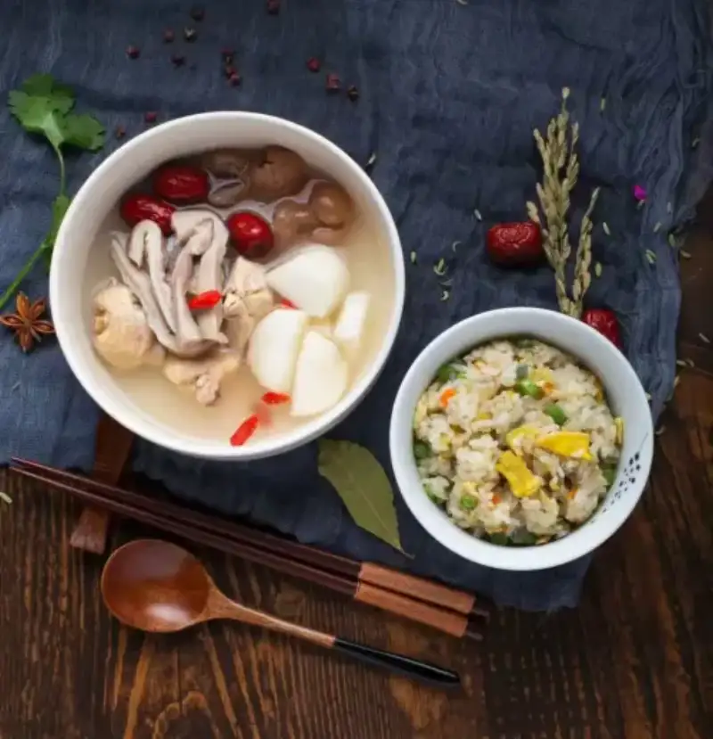
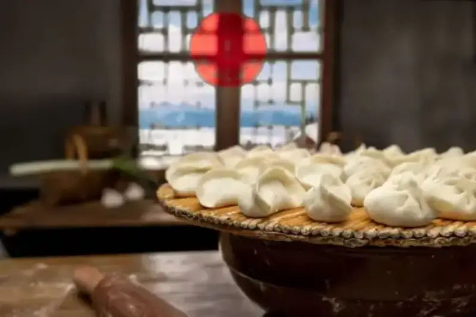
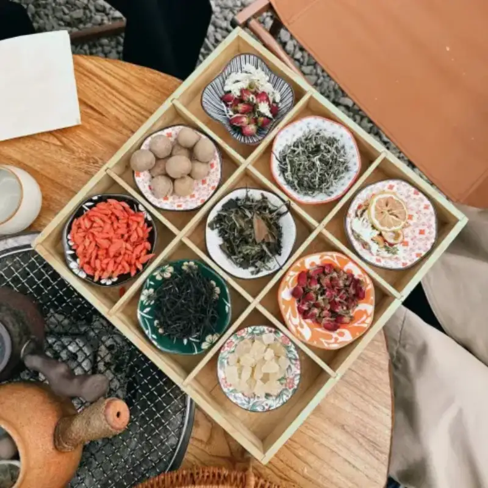

The weather grows colder,
winter food that warms both stomach and heart
has not only become a favorite of diners,
it has also become a popular subject for photography.
Candied hawthorn on a stick, dried persimmons, hot pot...
How do you make the winter dishes in your photos look more tempting?
Xiaoshi brings you some tips for winter food photography.
Let us take a look.

Frame: Careful Plating vs. Everyday Feel
Choose the right background and props and plate the food carefully. This sets off the color of the ingredients and builds a mood. When you shoot bright winter desserts such as candied hawthorn and dried persimmons, use a dark tone or a simple style as the background. This pairing not only brings out the tempting look of the food but also adds a warm, nostalgic feeling to the photo.

Compared with carefully plated food, shooting natural everyday scenes, such as snacks from street vendors and ingredients laid out in an open space, lets the viewer feel the warmth of winter life.

Shot Size: Food Detail vs. Overall Mood
Different shot sizes give different results.
A close shot brings out the detail of the food and shows the texture and color of the ingredients. When you shoot winter soups, focus on the texture of the ingredients, the boiling surface, and the rising steam. This lets the viewer taste the freshness through the screen. When you shoot winter desserts, a close-up emphasizes the gloss of the food and better stirs the senses and the appetite.

A medium shot shows the whole look of the food and also includes some surroundings, which adds everyday life to the photo. When you shoot winter food such as hot pot or iron-pot stew, pull the lens back a little. Let the food sit in the center of the frame, guide the viewer's eye, and make the food the main subject. At the same time, catch the rich ingredients or condiments around it to make the frame feel full.

A wide shot shows the whole dining scene and lets the viewer feel the winter food mood from a wider angle, such as a table set with many ingredients or a steaming breakfast stall at an early market. A wide shot also catches the light and shadow around the food. Sunlight through a window or warm indoor light effectively brings out the warmth of winter food.

Composition: Classic and Steady vs. Breaking the Order
Different composition directly affects the viewer and gives different visual results.
Center composition is a classic, direct way to frame. It places the subject in the middle of the frame and creates a balanced, harmonious feel. It suits food with a regular shape, such as dumplings and sweet rice balls. These foods are closely tied to festivals and seasons and are a symbol of holiday mood. When you shoot, use a wide aperture to keep the viewer's eye on the food.

Diagonal composition arranges the elements along a diagonal. It breaks the symmetry of the frame and creates visual tension. Add leading lines, such as the folds of a tablecloth, the edge of a plate, or the way the food is arranged. These can all guide the eye in a diagonal composition.

Rule-of-thirds composition divides the frame into three parts and places the subject at a grid intersection to bring out the main element. When you shoot winter food, set the dish as a foreground at the upper, lower, left, or right third of the frame. Leave some empty space. This keeps the frame balanced and effectively brings out the subject.

Scatter composition spreads the food or dishes evenly across the frame. It works well when a table holds several dishes or when similar foods are neatly lined up. It creates a balanced and striking frame.

Winter is the time to put on a little weight.
As you enjoy winter food,
pick up your camera,
and record that mouth-watering feel of winter.